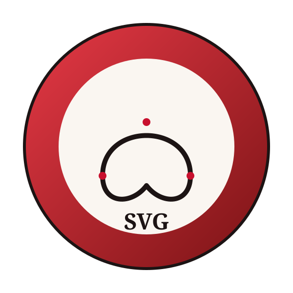

Berbeda dari PNG dan JPG yang menyimpan gambar sebagai kumpulan piksel, SVG menyimpan gambar dalam bentuk markup XML yang mendeskripsikan bentuk geometris secara matematis, mulai dari garis, kurva Bezier, lingkaran, hingga poligon, lengkap dengan koordinat titik jangkar dan atribut warna. Karena itu, SVG bersifat resolution independent dan dapat diperbesar atau diperkecil pada skala berapa pun tanpa mengalami pecah atau blur.
Sifat inilah yang membuat SVG menjadi pilihan utama untuk logo dan ikon pada produk digital, karena satu berkas saja sudah cukup digunakan di berbagai ukuran tampilan, mulai dari favicon kecil hingga banner besar. SVG juga dapat diedit langsung melalui CSS maupun JavaScript karena strukturnya berupa elemen DOM, sehingga warna atau bentuknya dapat diubah secara dinamis tanpa membuka ulang aplikasi desain.
- Struktur DataXML (path, node, atribut)
- SkalabilitasTak terbatas, tanpa blur
- Kasus TerbaikLogo, ikon, ilustrasi flat
- InteraktivitasDapat diubah via CSS/JS
Gambar contoh SVG belum ditampilkan.
Klik tombol di bawah untuk melihatnya.

images/sample.svg · vektor, skala bebas